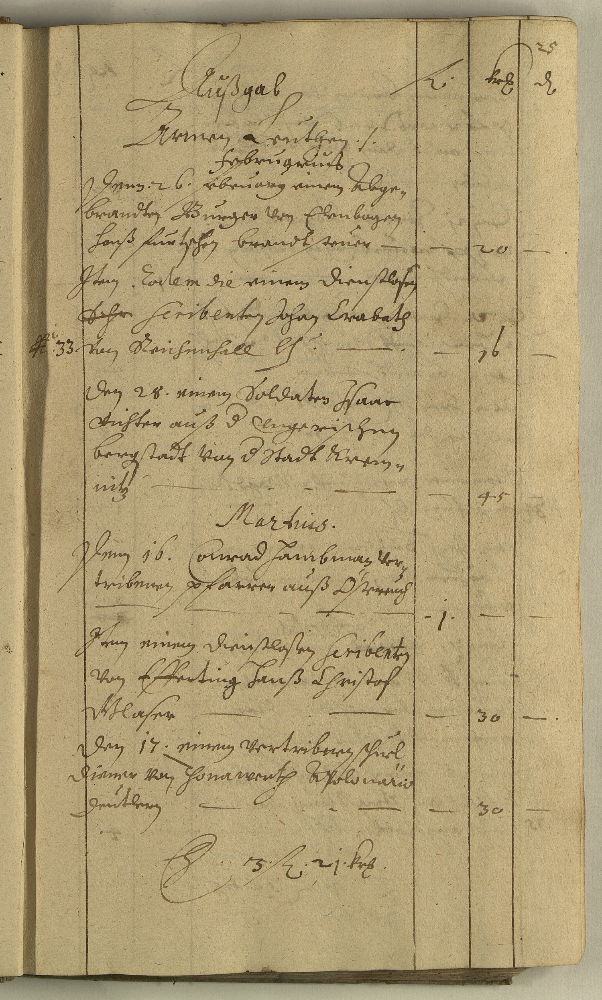

StA Amberg, Pfalz-Sulzbach, Sulzbacher Rechnungen 12, fol. 25r



Kommentar
StA Amberg, Pfalz-Sulzbach, Sulzbacher Rechnungen 12, fol. 25r
Amtsbuch, 1625 Februar und März
Amtsbuch, 1625 Februar und März
Archivaliengattung: Amtsbuch
Schwierigkeitsgrad: leicht
Schreiberhände:
- unbekannter Schreiber (S1)
- Foliierung von anderer Hand (S2)
Das Rechnungsbuch enthält Aufstellungen von Ausgaben für Bedürftige für die Monate Februar und März inklusive Gesamtsumme.
Die Aufstellung ist in Kurrentschrift verfasst, lateinische Worte sind überwiegend in humanistischer Kursive wiedergegeben, gegebenenfalls mit Kurrent-Endung (Z. 9, 17: Scribenten(Textzitat)) Die Groß- und Kleinschreibung ist teilweise uneindeutig, z.B. bei v(Textzitat). Der letzte Schaft von endständigem m(Textzitat) oder n(Textzitat) ist in die Unterlänge gezogen.
Striche, die nur als Zeilenfüller dienen, werden nicht transkribiert.
Die Aufstellung ist in Kurrentschrift verfasst, lateinische Worte sind überwiegend in humanistischer Kursive wiedergegeben, gegebenenfalls mit Kurrent-Endung (Z. 9, 17: Scribenten(Textzitat)) Die Groß- und Kleinschreibung ist teilweise uneindeutig, z.B. bei v(Textzitat). Der letzte Schaft von endständigem m(Textzitat) oder n(Textzitat) ist in die Unterlänge gezogen.
Striche, die nur als Zeilenfüller dienen, werden nicht transkribiert.
Entzifferung
(Absatz Beginn)
| 2 | (unbekannter Schreiber:) Außgab | f(lorenos) | kr(euzer) | d(enarios) |
| 3 | Armen Leuthen ./. | |||
| 4 | Februarius | |||
| 5 | Denn .26. februarij einem Abge- | |||
| 6 | brandten Burger von Elenbogen | |||
| 7 | hanß furtschen brandtsteuer | – | 20 | – |
| 8 | Jtem. Eodem die(Wechsel des Schriftsystems) einem dienstlosen | |||
| 9 | Schr(getilgt) Scribent(Wechsel des Schriftsystems)en Johan Crabath | |||
| 10 N(umer)o 33 | Von Reichenhall b(randsteuer) | – | 16 | – |
| 11 | den .28. einem Soldaten Jsaac | |||
| 12 | Richter auß d(er) vngerischen | |||
| 13 | bergstadt von d(er) Stadt Krem- | |||
| 14 | nitz | – | 45 | – |
| 15 | Martius.(Wechsel des Schriftsystems) | |||
| 16 | Denn 16. Conrad Hambman ver- | |||
| 17 | tribenen pfarrer auß Östereuch | |||
| 18 | – | .1. | – | |
| 19 | Jtem einem dienstlosen Scribent(Wechsel des Schriftsystems)en | |||
| 20 | von Efferting Hanß Christof | |||
| 21 | Glaser | – | 30 | – |
| 22 | Den 17. einem vertribnen schuel- | |||
| 23 | diener von Thonawerth Apolonario | |||
| 24 | Deutlern | – | 30 | – |
| 25 | S(umma)a) . 3 . f(loreni) . 21 . kr(euzer) . |
a) Lesung des gekürzten Wortes als S(umma) (Textzitat) unsicher, möglich wäre auch l(atus) (Textzitat) = Übertrag
Transkription
(Absatz Beginn)
| 2 | (unbekannter Schreiber:) Außgab | f. | kr. | d. |
| 3 | Armen leuthen | |||
| 4 | Februarius | |||
| 5 | Denn .26. februarii einem abge- | |||
| 6 | brandten burger von Elenbogen, | |||
| 7 | Hanß Furtschen, brandtsteuer: | – | 20 | – |
| 8 | Item eodem die(Wechsel des Schriftsystems) einem dienstlosen | |||
| 9 | a) scribent(Wechsel des Schriftsystems)en, Johan Crabath | |||
| 10 Numero 33 | von Reichenhall, brandsteuer: | – | 16 | – |
| 11 | den 28. einem Soldaten, Isaac | |||
| 12 | Richter auß der ungerischen | |||
| 13 | bergstadt von der stadt Krem- | |||
| 14 | nitz: | – | 45 | – |
| 15 | Martius(Wechsel des Schriftsystems) | |||
| 16 | Denn 16. Conrad Hambman, ver- | |||
| 17 | tribenen pfarrer auß Östereuch: | |||
| 18 | – | .1. | – | |
| 19 | Item einem dienstlosen scribent(Wechsel des Schriftsystems)en | |||
| 20 | von Efferting, Hanß Christof | |||
| 21 | Glaser: | – | 30 | – |
| 22 | Den 17. einem vertribnen schuel- | |||
| 23 | diener von Thonawerth, Apolonario | |||
| 24 | Deutlern: | – | 30 | – |
| 25 | Summab) 3 f., 21 kr. |
a) durch Durchstreichen getilgt: schr(Textzitat)
b) Lesung des gekürzten Wortes als S(umma) (Textzitat) unsicher, möglich wäre auch l(atus) (Textzitat) = Übertrag